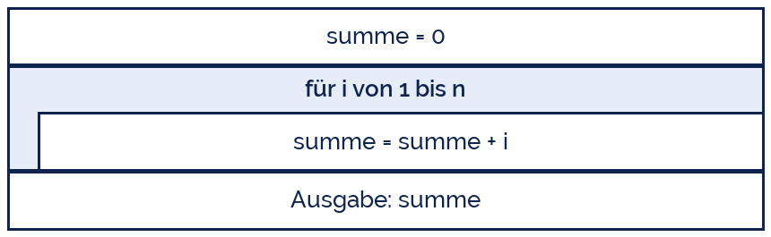
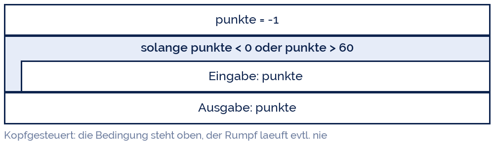

yoshitaka2
yoshitaka2
Good morning!
Nur das Schöne wird die Welt retten!
Fjodor Dostojewski
Nicht verzagen, Doc Alvers fragen!
Informatik — FOS 12
Grundstruktur III: die Wiederholung
Zählschleife und bedingte Schleife — und wie man sie wieder loswird
Nicht verzagen, Doc Alvers fragen!
Kapitel 01
Wozu Schleifen?
Der Rechner ist geduldig, der Programmierer nicht
Nicht verzagen, Doc Alvers fragen!
Hundert Zeilen oder drei
100 Zahlen addieren — ohne Schleife: 100 Zeilen. Mit Schleife: drei
Eine Schleife wiederholt einen Block, solange oder sooft es nötig ist
Zwei Fragen entscheiden über die Bauart: Weiß ich vorher, wie oft?
Ja → Zählschleife (for) · Nein → bedingte Schleife (while)
Jede Schleife braucht etwas, das sie beendet — sonst läuft sie ewig
Nicht verzagen, Doc Alvers fragen!
Die beiden Bauarten
| Zählschleife (for) | bedingte Schleife (while) | |
|---|---|---|
| Anzahl vorher bekannt? | ja | nein |
| Steuerung | eine Laufvariable zählt | eine Bedingung wird geprüft |
| typisch | „für jede Note in der Liste“ | „solange die Eingabe falsch ist“ |
| Gefahr | gering | Endlosschleife |
Beide sind kopfgesteuert: erst prüfen, dann ausführen — der Block läuft eventuell null Mal
Die fußgesteuerte Schleife (erst ausführen, dann prüfen) gibt es in Python nicht direkt
Nicht verzagen, Doc Alvers fragen!
Kapitel 02
Die Zählschleife
for — wenn die Anzahl feststeht
Nicht verzagen, Doc Alvers fragen!
for und range
for i in range(5):
print(i) # 0 1 2 3 4 - fuenf Durchlaeufe, Start bei 0
for i in range(1, 6):
print(i) # 1 2 3 4 5
for i in range(0, 20, 5):
print(i) # 0 5 10 15 - Schrittweite 5
for note in [2, 1, 3, 2]:
print('Note:', note) # direkt ueber die Liste laufenNicht verzagen, Doc Alvers fragen!
range verstehen
| Aufruf | erzeugt | Anzahl Durchläufe |
|---|---|---|
| range(5) | 0, 1, 2, 3, 4 | 5 |
| range(1, 6) | 1, 2, 3, 4, 5 | 5 |
| range(1, 6, 2) | 1, 3, 5 | 3 |
| range(5, 0, -1) | 5, 4, 3, 2, 1 | 5 |
| range(0) | nichts | 0 |
Der Startwert gehört dazu, der Endwert nicht — range(1, 6) endet bei 5
Genau hier sitzt der Zaunpfahlfehler: einmal zu oft oder einmal zu wenig
Nicht verzagen, Doc Alvers fragen!
Die Zählschleife im Struktogramm
Der Rahmen umschließt genau das, was wiederholt wird
Die Zeile oben nennt die Laufvariable und ihren Bereich
Der Summierer wird vor der Schleife auf 0 gesetzt — sonst gibt es ihn beim ersten Durchlauf nicht
Nach dem Rahmen steht das Ergebnis: die Schleife ist da schon fertig

Nicht verzagen, Doc Alvers fragen!
Kapitel 03
Die bedingte Schleife
while — solange etwas gilt
Nicht verzagen, Doc Alvers fragen!
Das Ratespiel
import random
gesucht = random.randint(1, 100)
versuche = 0
tipp = 0
while tipp != gesucht:
tipp = int(input('Dein Tipp: '))
versuche = versuche + 1
if tipp < gesucht:
print('zu klein')
elif tipp > gesucht:
print('zu gross')
print(f'Richtig! {versuche} Versuche.')Nicht verzagen, Doc Alvers fragen!
Drei Dinge, die jede while-Schleife braucht
Vorbereiten: die Variable der Bedingung muss vor der Schleife einen Wert haben
Prüfen: die Bedingung im Kopf entscheidet über jeden weiteren Durchlauf
Verändern: im Rumpf muss sich etwas ändern, das die Bedingung irgendwann falsch macht
Fehlt der dritte Punkt, entsteht die Endlosschleife — Abbruch mit Strg+C
Ehrliche Frage vor dem Start: Warum hört diese Schleife auf?
Nicht verzagen, Doc Alvers fragen!
Eingabe erzwingen — das häufigste while
punkte = -1
while punkte < 0 or punkte > 60:
punkte = int(input('Punkte (0-60): '))
if punkte < 0 or punkte > 60:
print('Ungueltig, bitte noch einmal.')
print('Danke:', punkte)
# Endlosschleife - der Klassiker:
# i = 1
# while i <= 10:
# print(i) # i wird nie groesser -> laeuft ewigNicht verzagen, Doc Alvers fragen!
Die bedingte Schleife im Struktogramm

Bedingung oben = kopfgesteuert: erst prüfen, dann ausführen
Stünde die Bedingung unten, liefe der Rumpf mindestens einmal (fußgesteuert)
Nicht verzagen, Doc Alvers fragen!
Kapitel 04
Die Klassiker
Vier Muster, die immer wiederkehren
Nicht verzagen, Doc Alvers fragen!
Muster, die ihr in jeder Aufgabe braucht
| Muster | Vorbereitung | im Rumpf | wofür |
|---|---|---|---|
| Zähler | anzahl = 0 | anzahl = anzahl + 1 | Wie viele erfüllen die Bedingung? |
| Summierer | summe = 0 | summe = summe + wert | Summe, Mittelwert |
| Extremwert | groesster = erster Wert | if wert > groesster: ... | Maximum, Minimum |
| Sucher | gefunden = False | if wert == gesucht: ... | Kommt X vor? |
Immer dasselbe Gerüst: vorher setzen — im Rumpf verändern — danach ausgeben
Beim Extremwert nie mit 0 starten: bei lauter negativen Zahlen wäre 0 das falsche Maximum
Nicht verzagen, Doc Alvers fragen!
Alle vier Muster in einem Programm
noten = [3, 1, 4, 2, 1, 5]
summe = 0
anzahl_einsen = 0
beste = noten[0]
for note in noten:
summe = summe + note
if note == 1:
anzahl_einsen = anzahl_einsen + 1
if note < beste:
beste = note
print('Mittelwert:', round(summe / len(noten), 2))
print('Einsen:', anzahl_einsen, '- beste Note:', beste)Nicht verzagen, Doc Alvers fragen!
Jede Schleife braucht eine Abbruchbedingung, die im Rumpf auch wirklich erreicht wird. Sonst rechnet der Computer bis Weihnachten.
Merksatz
Nicht verzagen, Doc Alvers fragen!
Fun Facts: Schleifen
Die Endlosschleife ist der Grund für den Ausschalter — und für Strg+C
while True: mit break ist keine Sünde, sondern das übliche Muster für Menüs
Der Ping-Pong-Bug im Mars-Rover Spirit 2004: eine Schleife startete den Rover 60-mal neu, bis das Team eingriff
Die Collatz-Vermutung ist ein Dreizeiler mit Schleife — ob sie bei jeder Zahl endet, weiß seit 1937 niemand
for heißt in Python „für jedes Element in“ — deshalb läuft es auch über Texte, Listen und Dateien
Nicht verzagen, Doc Alvers fragen!
Eure Aufgabe: Schleifen bauen
Einmaleins: eine Zahl einlesen und die Reihe von 1 bis 10 ordentlich ausgeben
Notenstatistik: so lange Noten einlesen, bis 0 eingegeben wird; dann Anzahl, Mittelwert, beste und schlechteste Note ausgeben
Ratespiel umdrehen: ihr denkt euch eine Zahl aus, der Rechner rät (Tipp: immer die Mitte)
Collatz: Zahl einlesen; ist sie gerade, halbieren, sonst mal 3 plus 1 — bis 1 erreicht ist. Zählt die Schritte
Zu jeder Aufgabe: Struktogramm zeichnen und die Frage beantworten warum hört die Schleife auf?
Nicht verzagen, Doc Alvers fragen!